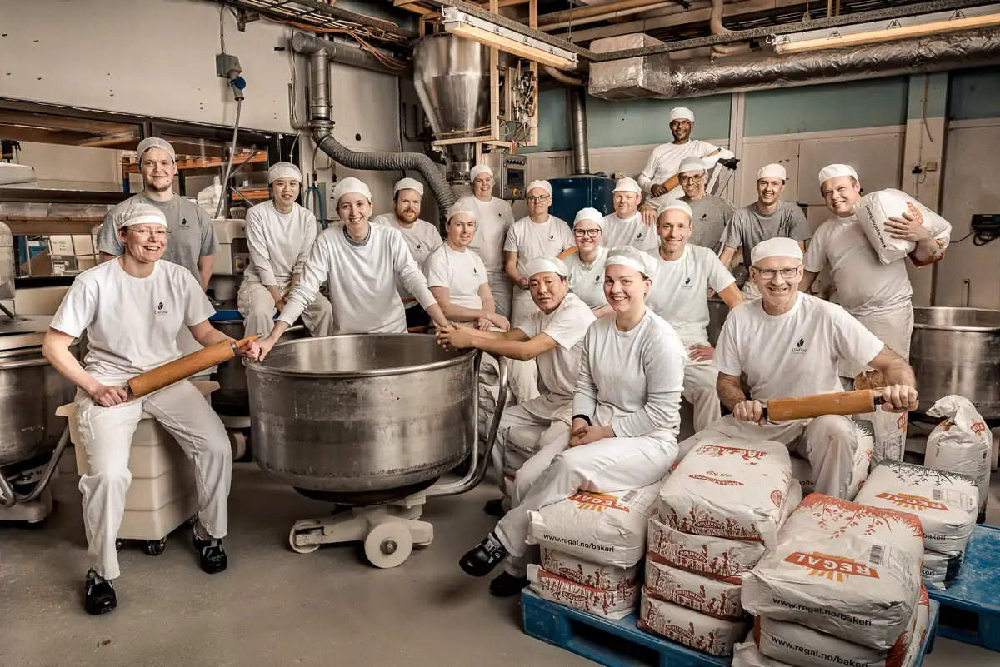

Naustdal dampbakeri · Sunnfjord
Kvalitetsbakst gjennom generasjonar.
Sidan 1888 har familien Berntsen bakt brød til sunnfjordingar. Vi er stolte av det vi lagar — og av at det har halde fram i over hundre år.
Sidan 1888FamilieeigdDampbakt
- 1888
- starta bakeriet
- Familien Berntsen
- i fem generasjonar
- Kafear og butikkar
- i Sunnfjord
Det vi lagar.
Brød, bakst og kaker — bakt på bakeriet i Naustdal og selt i kafear, butikkar og nettbutikk.


Fem generasjonar i same bakeri.
Sidan 1888 har familien Berntsen bakt brød til sunnfjordingar. Det er lang tid — og ein påminning om at det er kundane i bygda som har gjort det mogleg.
Vi er stolte av det vi lagar. Kvaliteten skal vera den same i dag som for hundre år sidan, sjølv om omnane er blitt moderne.


Kafear og butikkar i Sunnfjord.
Du finn oss i Naustdal og i nærområdet. I kaféane kan du setje deg ned med kaffi og nybakt bakst, eller ta med heim.
Nettbutikken er open for dei som vil bestille på førehand.
Vil du bestille bakst?
Ring 57 72 41 40, eller send ei melding med kva du treng og når.